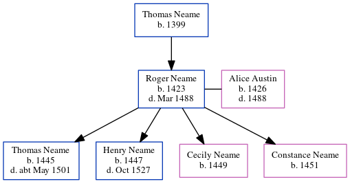

Roger Neame 1423 - 1488
[ Home ] | [ Calendar ] | [ Surnames Index ] | [ Errors ] | [ Family History ]The child of Thomas Neame, Roger Neame, the 15 times great-grandfather of Nigel Horne, was born in Woodnesborough, Kent, England in 1423 and married Alice Austin (with whom he had 4 children: Thomas, Henry, Cecily and Constance) in Woodnesborough in 1444, which is also where he died in Mar 14881.
Parents
- Thomas was born in 1399
Children
- Thomas was born in 1445
- Henry was born in 1447
- Cecily was born in 1449
- Constance was born in 1451
Citations
- UK, Extracted Probate Records Online publication - Provo, UT, USA: Ancestry.com Operations Inc, 2009.Original data - Electronic databases created from various publications of probate records.Original data: Electronic databases created from various publications of probate records.
Family Tree
Map
Generated by ged2site. Last updated on Jul 3, 2024
Known Issues
Birth date (1423) has no citations
Marriage date (1444) has no citations